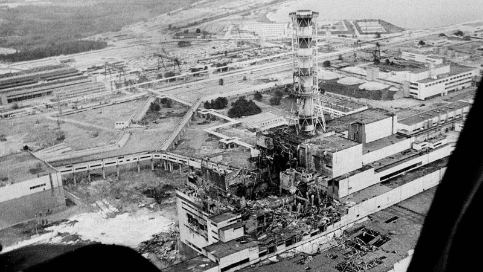

ACCIDENTE DE CHERNOBIL
El accidente de Chernóbil fue una combinación de un mal diseño de la central nuclear, que además no disponía de un recinto de contención, junto con los errores producidos por los operadores de la misma.
La falta de una “cultura de seguridad”, consecuencia a su vez de la falta de un régimen político y social democrático en la Unión Soviética, está en la raíz del accidente de Chernóbil.
Causas
El accidente de Chernóbil fue una combinación de un mal diseño de la central nuclear, que además no disponía de un recinto de contención, junto con los errores producidos por los operadores de la misma, dejando fuera de servicio voluntariamente varios sistemas de seguridad con el fin de realizar un experimento, en el marco de un sistema en el que el entrenamiento era escaso, y en el que no existía un organismo regulador independiente.
La Unión Soviética no tenía un sistema independiente de inspección y evaluación de la seguridad de las instalaciones nucleares, es decir, un organismo regulador, como en los países occidentales.
El diseño de un reactor del tipo RBMK no hubiera sido nunca autorizado en los países occidentales. De hecho, nunca se ha construido un reactor de este diseño fuera de la antigua Unión Soviética.
Las prácticas operativas de los reactores soviéticos no eran homologables a las de los países occidentales. En éstos, no hubieran sido nunca permitidas.
Efectos y estudios
Los efectos del accidente de Chernóbil han sido evaluados por organismos internacionales, fundamentalmente el OIEA y la Organización Mundial de la Salud, que han hecho públicos los resultados de su investigación y que se resumen a continuación:
Según el informe de la Organización Mundial de la Salud “Chernóbil, la verdadera escala del accidente” realizado a mediados de 2005, no llegan a 50 las defunciones atribuidas directamente a la radiación liberada por el accidente de Chernóbil; casi todas las muertes directas del accidente fueron de trabajadores de servicios de emergencia que sufrieron una exposición intensa y fallecieron a los pocos meses del accidente.
Este mismo informe indica que la contaminación provocada por el accidente ha causado alrededor de 4.000 casos de cáncer de tiroides, principalmente en personas que eran niños o adolescentes en el momento del accidente, y al menos nueve niños han muerto de cáncer de tiroides; con todo, la tasa de supervivencia entre las víctimas del cáncer, a juzgar por la experiencia en Bielorrusia, es de casi el 99%.
En total, hasta 4.000 personas podrían morir a causa de la radiación a la que se vieron expuestas a raíz del accidente ocurrido en la central nuclear de Chernóbil, según las conclusiones a que ha llegado un equipo internacional integrado por más de 100 científicos.
Uno de los daños más importantes producidos en la población es el impacto psicológico derivado del desconocimiento del efecto de la radiación y las informaciones incorrectas que se prodigaron.
Los ecosistemas afectados por el accidente de Chernóbil se han estudiado y vigilado ampliamente en los dos últimos decenios. Durante los primeros diez días hubo grandes emisiones de radionucleidos que contaminaron más de 200.000 kilómetros cuadrados de Europa.
